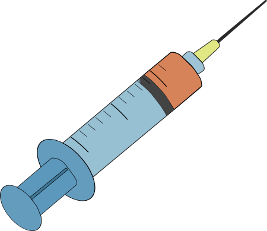

Зельман Ваксман та його група студентів знали зі власних дослідів in vitro, що стрептоміцин активний проти бацили, що викликає туберкульоз. Але Ваксман чудово розумів, що його невелика лабораторія в Ратгерському університеті не обладнана для подальших випробувань, тим більше in vivo. Тому Ваксман звернувся до двох медичних дослідників з клініки Майо: Вільяма Х. Фельдмана та Х. Корвіна Хіншоу — з проханням провести випробування на тваринах, використовуючи морських свинок. Фельдман відповів 7 березня 1944 року, що «ми можемо провести таке випробування», якщо Ваксман зможе отримати достатню кількість зразків агента.
